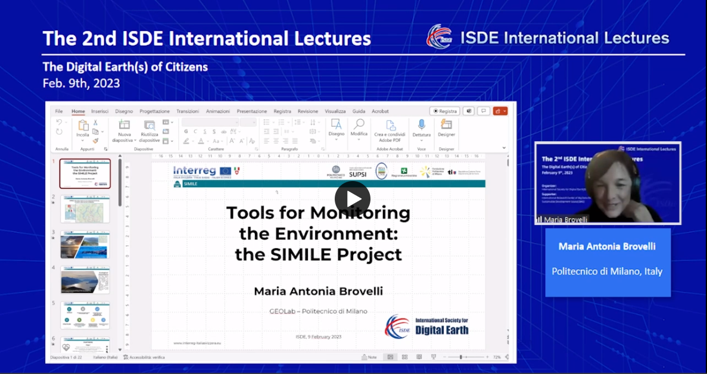
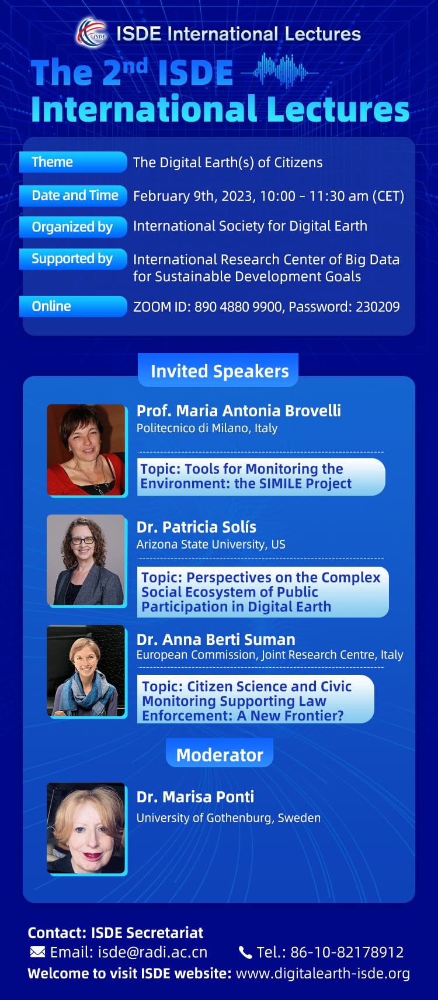
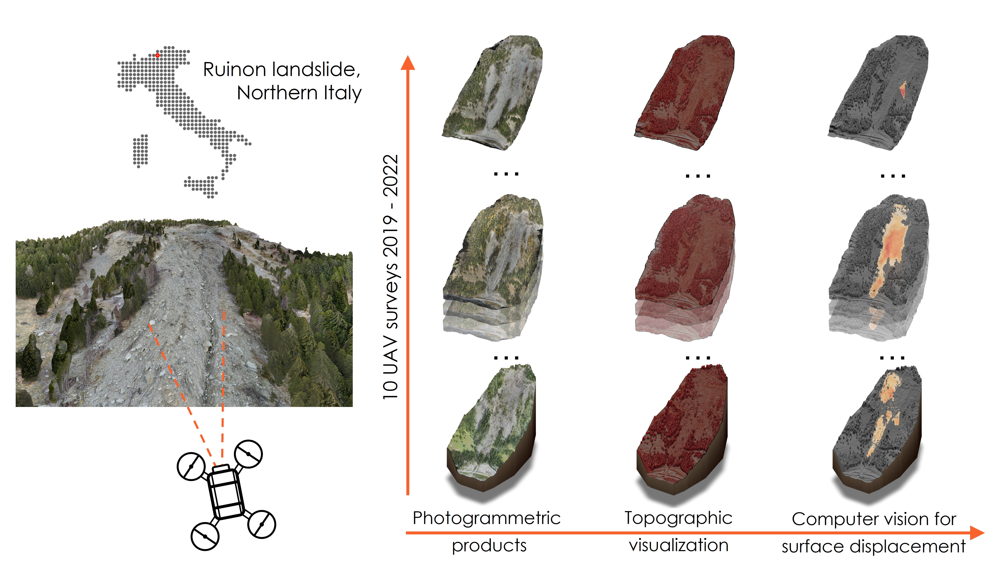
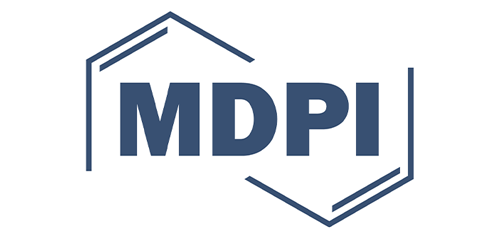
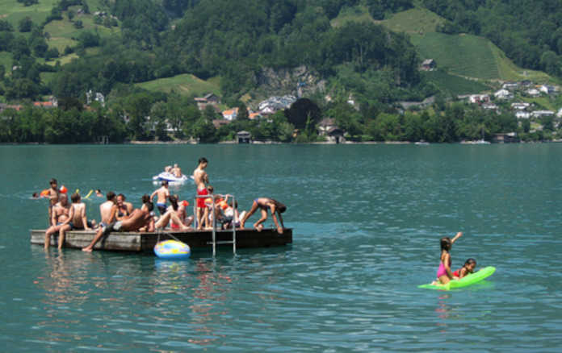
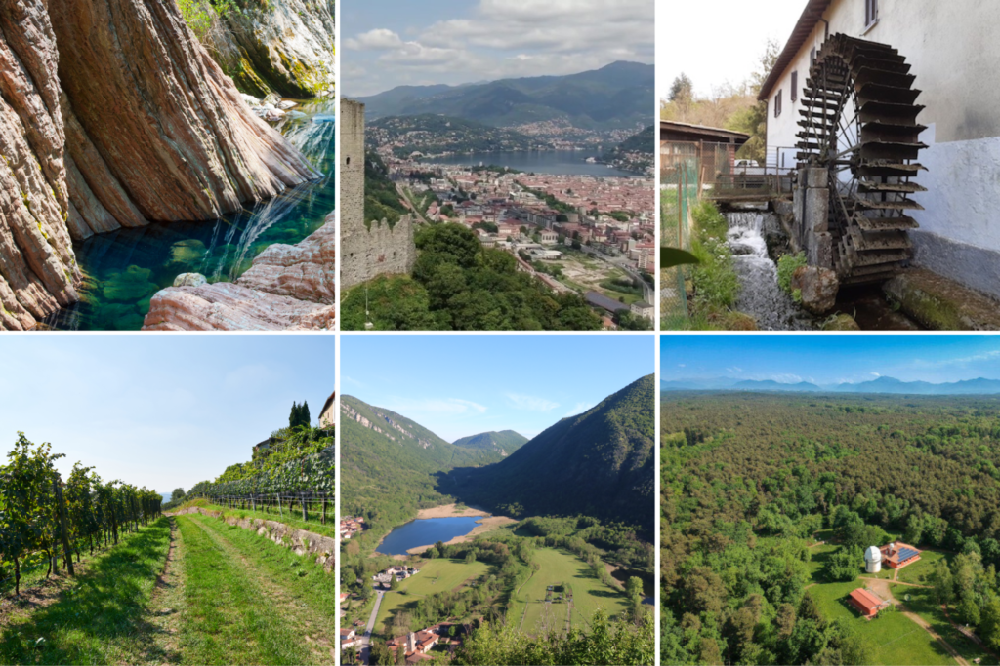
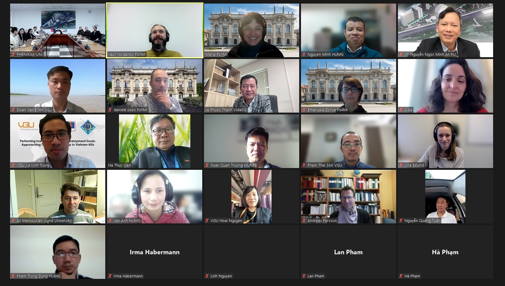

GIS-GEOLab News


Students as agents of change: Mapping the world with euthmappers to create social impact
How can we make STEM education engaging, meaningful, and socially
impactful? The EUthMappers project, supported by the Erasmus+
programme, brings collaborative mapping into European secondary
schools, turning classrooms into hubs for environmental and civic
action.
The project is supervised by Prof. Maria Brovelli, Prof. Alberta
Albertella, and researcher Quang Huy Nguyen, all affiliated with the
Department of Civil and Environmental Engineering at Politecnico di
Milano, who coordinate its scientific and educational aspects.
Now in its fourth phase, launched on April 1st, 2025, students are
participating in a real humanitarian mapping project in collaboration
with UN Mappers. Their task? To map building footprints in Kandahar,
Afghanistan, using the OpenStreetMap platform. The data will
contribute to building a 3D digital replica of the city—a vital tool
that allows UN peacekeepers to remotely explore inaccessible areas,
simulate field scenarios, and perform operational planning within a
shared sandbox environment. A hands-on way to apply skills with a
real-world impact.
Students are also engaged in training activities, interactive quizzes,
and geospatial challenges using tools specifically developed for the
project, such as iDSandbox4ALL, iD4ALL, and 3D visualization
platforms. All materials and tutorials are available on the
EUthMappers YouTube channel.
Last year, five schools designed and implemented their own local
mapping projects, showcasing the potential of open mapping in
education—summarized in
this student-led video. Building on that success, this year’s webinar “How to Work Together
– The Value of Collaborative Work” brought students together across
Europe to explore teamwork, group roles, collaborative planning, and
the role of digital tools in addressing urban and environmental
challenges.
In a world facing complex global issues, teaching students to
collaborate and use innovative digital tools for territorial data
collection and analysis is an invaluable opportunity. EUthMappers
shows how education can be a driver of international change—powered by
students.
Tutorial on urban monitoring and analysis with remote sensing and spatial information technology (6th April 2025)
We are happy to announce that GISGeolab of Polimi (Supported by the
SpaceItUp project) within collaboration of Beijing University of Civil
Engineering and Architecture (BUCEA) carried out a hands-on tutorial
"Urban monitoring and analysis with remote sensing and spatial
information technology" during the Geospatial Week 2025 in Dubai.
The tutorial provided a hands-on approach to urban monitoring and
analysis using remote sensing and spatial information technology.
Participants explored key concepts like urban heat islands, local
climate zones, urban air quality, and spatial patterns. Through guided
exercises and case studies, attendees learned practical techniques for
urban data extraction, classification, and spatial analysis.
Instructors: Prof. Maria Antonia Brovelli (POLIMI). Presentation can
be downloaded from
here.
Prof. JIANG Jie (BUCEA)
Urban information extraction from images - Wang Runjie and Liu
Xianglei (BUCEA). Materials can be downloaded from
here.
Urban heat island and LCZ mapping - Alberto Vavassori (POLIMI). The
presentation can be downloaded from
here, and
additional materials from
here
Urban air quality - Vasil Yordanov (POLIMI). Materials can be
downloaded from
here.
Analysis of urban spatial pattern - Guo Xian and Chen Qiang (BUCEA).
The presentation can be downloaded from
here, and additional material from
here
GISGeoLab Researcher Wins Best Presentation Award at ICGDA 2024 (20th April 2024)
We are happy to announce that one of our PhD candidates, Rodrigo Cedeno, received the award for Best Presentation at the recent International Conference on Geoinformatics and Data Analysis (ICGDA) held in Paris on 20th April 2024. The presentation, titled "QGIS and Open Data Cube Applications for Local Climate Zones Analysis Leveraging PRISMA Hyperspectral Satellite Data," showcased innovative approaches in utilising advanced geospatial data for climate zone analysis, a project developed for the Italian Space Agency. This recognition was awarded in the session "Location-Based Information Communication and Surveying Technology". The work demonstrates the GISGeoLab's commitment to advancing the field of geoinformatics through cutting-edge technology and collaborative research. For more details on the conference outcomes, please visit: https://www.icgda.org/index.html.
LCZ-ODC workshop Milano
Seize the beauty of our Planet' contest win!
Lorenzo Amici, a Ph.D. student from our lab, has won the 4th edition of the 'Seize the beauty of our Planet' contest hosted by CloudFerro. This year's contest, titled 'Together for COOL Earth!', awarded the best satellite image depicting effects of global warming on our planet. His image showcases the aftermath of Hurricane Hilary over Death Valley, where an unprecedented amount of rain transformed the desert into a lake. You can see all the images of the contest here.

Landeslides GEOAI Challenge
Landslides pose a significant threat to infrastructure, property, and human life on a global scale. The Italian Alps, with their steep slopes and geological characteristics, are particularly vulnerable to such hazards. Thus, the aim of this challenge is to create a landslide susceptibility map for a specific watershed using geospatial environmental datasets and advanced machine learning models. The final output will provide a comprehensive visualisation of the spatial probability of an area being affected by a landslide. This information can greatly assist local authorities in implementing effective mitigation measures to prevent and minimise damages caused by landslides. This product will contribute to the United Nations Sustainable Development Goals 11 and 13, which focus on creating sustainable and resilient cities and combating climate change effects, respectively. final event: 2023 ITU GeoAI Challenge Finale: Landslide Susceptibility Mapping" will take place on December 6th, 2023 at 11:00 Geneva time CE(S)T! The challenge is curated by GeoLab (Politecnico di Milano) https://www.gisgeolab.polimi.it/ The best teams from the 2023 competition will showcase their solutions be awarded during this session and receive certificates to recognize their outstanding performance. Cash Prizes: The ITU GeoAI Challenge allocated 1000 CHF for this Challenge Schedule 11:00-11:05 Introductory remarks on the 2023 GeoAI Landslide Susceptibility Mapping (ITU) 11:05-11:15 Remarks from hosts of the 2023 Landslide Susceptibility Mapping (GeoLab, Politecnico di Milano ) 11:15-11:45 Best solution pitches by Teams (Enigmatic, Luay,Zysy)11:45-11:55 Award announcements: prizes and certificates (GeoLab, Politecnico di Milano) 11:55-12:00 Outlook-The GeoAI Competition in 2024 (GeoLab, Politecnico di Milano, ITU) Visit here https://neuralnetwork.aiforgood.itu.int/event/ai-for-good/register?registerAsParticipant=true&externalId=21428 to automatically add it to your AI for Good Neural Network agenda and receive notifications as the session gets closer. On December 6th, 2023 head to the "Stages" area to watch the session live, ask questions, and network with fellow attendees and the speakers after the session!
Challenge by ITU GeoAI4Good and Politecnico di Milano
At
Challenge by ITU GeoAI4Good and Politecnico di Milano
The challenge by ITU GeoAI4Good and Politecnico di Milano is focused
on leveraging machine learning to produce air pollution susceptibility
maps in the city of Milan. The objective is to support decision-making
for a more resilient and sustainable city, aligning with UN
Sustainable Development Goals 11 and 13. On Monday 4th of December the
finale will take place, where the top participants will present their
approaches, and the winners will be announced. It's an excellent
opportunity to witness the power of AI in addressing real-world
challenges.
Our workshop at FOSS4G 2023: Mapping with style to fight misinformation
At
FOSS4G, Prizren (Kosovo) 2023,
Rodrigo Cedeno
from our lab and
Dimitris Karakostis
from the World Food Programme had
the opportunity to present their workshop titled "Mapping with style
to fight misinformation: creating neat maps with QGIS based on real
data". See their after-workshop interview in the video below:
2nd ISDE International Lectures: The Digital Earth(s) of Citizens
Organized by the International Society for Digital Earth (ISDE), the
2nd ISDE International Lectures with the theme of "The Digital
Earth(s) of Citizens" was successfully held on 9th February, 2023.
More than 2,300 participants worldwide attended this event online.
We are glad to inform you that the videos and PPTs of the 2nd ISDE
International Lectures can be accessed at the
ISDE website.

GIS GEOLab present at the Fourth Expert Meeting of the Working Group on Marine Geospatial Information
The Fourth Expert Meeting of the Working Group on Marine Geospatial
Information took place in the city of Genoa from January 30th to
February 3rd, 2023. The Fourth Expert Meeting was held in
conjunction with the Fourteenth meeting of the Marine Spatial Data
Infrastructure Working Group of the International Hydrographic
Organization (IHO) and the Annual meeting of the Marine Domain
Working Group of the Open Geospatial Consortium (OGC). The official
website of the meeting can be seen
here.
The event hosted international experts on Marine geospatial
information from all around the world. Our member Juan Pablo Duque
Ordoñez, Ph.D. Candidate in Environmental Engineering, in
representation of Politecnico di Milano and the GIS GEOLab, actively
participated in the conversation by presenting the technological
perspective on Marine Geospatial Information in Italy, mentioning
the data available for Italy and Europe, the technological
challenges of Marine Geospatial Information, and examples of Italian
web platforms that integrate marine geospatial data, including the
one developed by the GEOLab, the COPERNICUS - Coastal Web Viewer
(COP-CW). The full presentation is freely available
here.
The 2nd ISDE International Lectures

Estimating Landslide Surface Displacement by Combining Low-Cost UAV
Setup, Topographic Visualization and Computer Vision Techniques

Authors: Vasil Yordanov, Quang Xuan Truong and Maria Antonia
Brovelli
Many techniques are available for estimating landslide surface
displacements, whether from the ground, air- or spaceborne. In
recent years, Unmanned Areal Vehicles have also been applied in the
domain of landslide hazards, and have been able to provide high
resolution and precise datasets for better understanding and
predicting landslide movements and mitigating their impacts. In this
study, we propose an approach for monitoring and detecting landslide
surface movements using a low-cost lightweight consumer-grade UAV
setup and a Red Relief Image Map (a topographic visualization
technique) to normalize the input datasets and mitigate unfavourable
illumination conditions that may affect the further implementation
of Lucas-Kanade optical flow for the final displacement estimation.
The effectiveness of the proposed approach in this study was
demonstrated by applying it to the Ruinon landslide, Northern Italy,
using the products of surveys carried out in the period 2019-2021.
Our results show that the combination of different techniques can
accurately and effectively estimate landslide movements over time
and at different magnitudes, from a few centimetres to more than
several tens of meters. The method applied is shown to be very
computationally efficient while yielding precise outputs. At the
same time, the use of only free and open-source software allows its
straightforward adaptation and modification for other case studies.
The approach can potentially be used for monitoring and studying
landslide behaviour in areas where no permanent monitoring solutions
are present.
Read more...
Insights into the Effect of Urban Morphology and Land Cover on Land
Surface and Air Temperatures in the Metropolitan City of Milan
(Italy) Using Satellite Imagery and In Situ Measurements

Authors: Mathilde Puche, Alberto Vavassori, and Maria Antonia
Brovelli
With a concentration of people, activities, and infrastructures,
urban areas are particularly vulnerable to the negative effects of
climate change. Among others, the intensification of the Urban Heat
Island (UHI) effect is leading to an increased impact on citizen
health and the urban ecosystem. In this context, this study aims to
investigate the effect of urban morphology and land cover
composition—which are established by exploiting the Local Climate
Zone (LCZ) classification system—on two urban climate indicators,
i.e., Land Surface Temperature (LST) and air temperature. The study
area is the Metropolitan City of Milan (northern Italy). LCZ and LST
maps are derived by leveraging satellite imagery and building height
datasets. Both authoritative and crowdsourced in situ measurements
are used for the analysis of air temperature. Several experiments
are run to investigate the mutual relation between LCZ, LST, and air
temperature by measuring LST and air temperature patterns in
different LCZs and periods. Besides a strong temporal correlation
between LST and air temperature, results point out vegetation and
natural areas as major mitigating factors of both variables. On the
other hand, higher buildings turn out to increase local air
temperature while buffering LST values. A way lower influence of
building density is measured, with compact building areas
experiencing slightly higher air temperature yet no significant
differences in terms of LST. These outcomes provide valuable tools
to urban planners and stakeholders for implementing evidence-based
UHI mitigation strategies.
Read more...
Il Politecnico di Lecco capofila del progetto finanziato nell'ambito Interreg Italia Svizzera 2014 - 2020

MILANO - Tenere sotto controllo e monitorare la qualità delle acque
dei laghi Maggiore, di Como, Lugano e, dallo scorso settembre, anche
del lago di Varese grazie al contributo dei cittadini e attraverso
la tecnologia di sensori avanzati, satelliti e una piattaforma
online.
E' giunto alla conclusione il progetto SIMILE - Sistema informativo
per il monitoraggio integrato dei laghi insubrici e dei loro
ecosistemi, finanziato nell'ambito del programma Interreg Italia
Svizzera 2014 - 2020 che ha dato voce al territorio e ha puntato
sulla gestione partecipata dell'ambiente in seguito a una nuova
governance transfrontaliera che ha visto la collaborazione tra
diversi partner: Politecnico di Milano - Polo di Lecco (capofila),
SUPSI - Scuola Universitaria Professionale della Svizzera Italiana,
Fondazione Politecnico di Milano, Regione Lombardia DG Ambiente e
Clima, CNR - Istituto di Ricerca sulle Acque, Repubblica e Cantone
Ticino - UPAAI.
Grazie a SIMILE - i cui risultati sono stati resi noti durante
l'evento “Scienza, Tecnologia e cittadinanza attiva per la
salvaguardia dei laghi” tenutosi al Politecnico di Milano - verranno
messe in atto azioni di contenimento della diffusione degli
inquinanti e innovazioni tecnologiche incentivando la collaborazione
tra settori della ricerca e delle università e le pubbliche
amministrazioni grazie al finanziamento del programma di
cooperazione transfrontaliero.
Leggi più...
Un progetto immenso tra Como, Varese e Ticino: Insubriparks, 125 km di itinerari, 121 luoghi da scoprire per un turismo lento

Natura e cultura nei parchi prealpini alla scoperta di un patrimonio
transfrontaliero. Insubriparks, un esempio virtuoso per valorizzare
identità e tradizioni, cinque parchi in rete, tre italiani e due
svizzeri, 125 chilometri quadrati di itinerari e 121 punti di
interesse mappati da scoprire. Il turismo lento e sostenibile sotto
la lente di ingrandimento per la promozione del territorio: se ne
parla il 25 gennaio 2023 a Palazzo Pirelli a Milano per presentare
la nuova e vera esperienza turistica che mette a sistema cultura,
storia e bellezze naturali. In Italia, nell'ultimo anno, il turismo
slow è cresciuto del 27% e una persona su cinque sceglie
destinazioni open air. Sono 25 i milioni di italiani (52%) che
prenotano una vacanza, di questi uno su cinque pianifica una vacanza
outdoor.
Leggi più...
Erasmus+ supported Climate change Adaptation using Digital geospatial twins and Earth Observation (CADEO) project for Capacity Building in Higher Education in Vietnam.
On the 15th of December was held a kick-off event for the Erasmus+
supported Climate change Adaptation using Digital geospatial twins
and Earth Observation (CADEO) project for Capacity Building in
Higher Education in Vietnam. The consortium includes two EU Higher
Education Institutions (Politecnico di Milano, IT and Lund
University, SE), four Vietnamese HEIs (Hanoi University of Mining
and Geology, Hue University, Vietnamese-German University and
Phenikaa University) and one Vietnamese private company (VidaGis).
The project's coordinator prof. Maria Antonia Brovelli (Politecnico
di Milano) welcomed the participants and guests by introducing the
project objective, envisaged activities and goals. CADEO project
aims to improve climate resilience strategies by leveraging the most
recent geospatial technologies to promote socially equitable
development and civic participation which is vital for any country,
including Vietnam.
The project consists of designing, implementing, and blending
teaching of four new innovative courses, training of trainers in
HEIs of Vietnam, development of required digital infrastructure for
Vietnamese HEIs, and dissemination of the results to wider society.
Courses for higher education programmes focusing on: Earth
Observation (EO), Digital Twin Earth, Geospatial Web applications
and Geospatial Intelligence. Deployment of cutting-edge eLearning
systems, co-designed by different EU and Vietnam HEIs and an
industry partner with the participation of key stakeholders. The EU
project officer Alba Prieto Gonzalez also welcomed the partnering
consortium.

Condizioni climatiche e interventi dell'uomo sul territorio rendono la Pianura Padana una delle aree più inquinate d'Europa.
In cima agli agenti inquinanti più critici troviamo il particolato,
le cosiddette “polverisottili” o, ancora più specifico, "polveri
fini". L'esposizione a lungo termine a elevate concentrazioni di
particolato aumenta la percentuale di patologie cardiovascolari e
respiratorie. Industrie, traffico e riscaldamento domestico sono tra
le principali cause di emissione di polveri sottili. Ma anche
allevamenti intensivi e attività agricole possono diffondere questo
inquinante.
Il progetto D-DUST (Data-driven moDelling of particUlate with
Satellite Technology aid) vuole fornire, tramite la ricerca,
importanti dati per indagare l'impatto che le emissioni derivanti da
attività agricole e zootecniche hanno sulla nostra salute.
Finanziato dal bando “Data Science for Science and Society” di
Fondazione
Cariplo, il
Politecnico di Milano, con la nostra collaborazione e quella dell'Università degli Studi dell'Insubria. “Il progetto D-DUST sperimenta nuove procedure analitiche e
predittive dei meccanismi di generazione e diffusione delle polveri
sottili prodotte dal comparto agricolo” - precisa
Maria Antonia Brovelli
- Politecnico di Milano.
Che vantaggi porterà la ricerca? “La ricerca mira a potenziare la
conoscenza a livello locale delle polveri sottili anche nelle aree
non coperte dalla stazioni di misurazioni a terra, al fine di
fornire stime e previsioni replicabili e spendibili nel monitoraggio
e nell'analisi dell'esposizione della popolazioni a tale inquinante”
continua la professoressa Brovelli.
Il progetto inoltre prevede la realizzazione di attività didattiche
che coinvolgeranno gli studenti degli istituti medi-superiori agrari
attraverso seminari di sensibilizzazione e partecipazione diretta
alle campagne di monitoraggio.
Italia e Svizzera, insieme per rilanciare le aree verdi
dall'Insubria al Ticino
Trasmesso su RAI 3 il video di presentazione del progetto Interreg
IT-CH INSUBRIPARKS a cui il GEOlab partecipa nello sviluppo degli
strumenti IT per la promozione del turismo nei parchi dell'area
insubrica.
Broadcasted on RAI 3 the video presentation of the Interreg IT-CH
INSUBRIPARKS project to which the GEOlab participates in developing
IT tools for tourism promotion in Insubria region natural parks.
AGREEMENT WITH THE BEIJING UNIVERSITY OF CIVIL ENGINEERING AND ARCHITECTURE
A COOPERATION ON TEACHING AND RESEARCH The Politecnico di Milano and the Beijing University of Civil Engineering and Architecture (BUCEA) have signed a five-year cooperation agreement that strengthens the collaboration between the two universities for civil/environmental engineering and architecture-related discipline development, scientific research, and joint talent training. At the heart of the agreement, signed by Giuliano Noci, Vice Rector of the Politecnico di Milano, and Dayu Zhang, President of BUCEA, the creation of a Joint Lab for the sustainable development of technologies for the conservation of cultural heritage, in view of the similarities between the historical cities of Beijing and Milan. The agreement will also facilitate the introduction of joint training courses and exchange programs for students and teachers.
WHO Information Network for Epidemics x Vision for future surveillance (STAG-IH 2022)
Video of Prof. Maria A Brovelli speech at the "Future Surveillance:
A Renewed Approach to Epidemics and Pandemics of the Strategic and
Technical Advisory Group on Infectious Hazards (STAG-IH) annual
meeting October 2022
Licenza Attribuzione di Creative Commons (riutilizzo consentito)
State of the Map 2022 (21-Aug-2022)
In occasione di State of the Map 2022, che si è svolto a Firenze dal
19 al 21 agosto 2022, i volontari di OpenStreetMap raccontano cos'è
il progetto e perché è importante coinvolgere e condividere idee con
le comunità di tutto il mondo.
SOTTOTITOLI IN ITALIANO DISPONIBILI
Scopri il progetto OpenStreetMap:
http://www.openstreetmap.org
Scopri di più sulla comunità italiana di OpenStreetMap:
https://osmit.it/
Musiche: Skinny Leonard di Audionautix è un brano concesso in uso
tramite licenza Creative Commons Attribuzione 4.0.
https://creativecommons.org/licenses/
Mumford & Sons Inspired by Hyde - Free Instrumentals
https://soundcloud.com/davidhydemusic Creative Commons — Attribution
3.0 Unported— CC BY 3.0
https://creativecommons.org/licenses/
Music provided by Music for Creators
https://youtu.be/5shSBRjyeiI
Licenza Licenza Attribuzione di Creative Commons (riutilizzo
consentito)